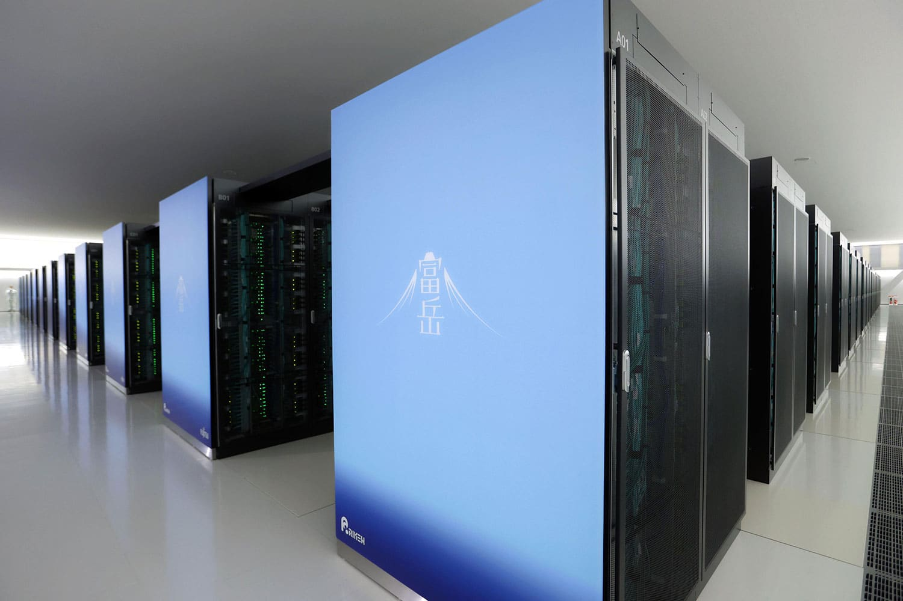
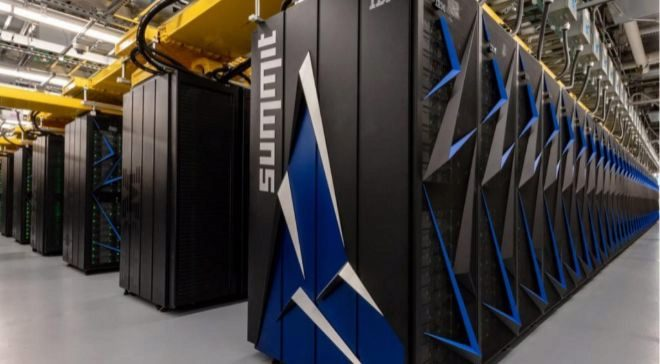

TOP 5 SUPERODENADORES MÁS POTENTES DE 2020

Los superordenadores son sistemas cuyo diseño de hardware y tecnológico ofrecen un alto rendimiento.Los usos de este tipo de máquinas son variados, desde administrar bases de datos gigantescas, a soportar grandes cantidades de computación inimaginables hace apenas unos años.

ANTES DE EMPEZAR
En informática, las operaciones de coma flotante por segundo son una medida del rendimiento de una computadora, especialmente en cálculos científicos que requieren un gran uso de operaciones de coma flotante.

El 23 de mayo de 2019, RIKEN anunció que la supercomputadora se llamaría Fugaku La supercomputadora está construida con el microprocesador Fujitsu A64FX. Usa 158 976 CPU A64FX unidas usando la interconexión de fusión de toro patentada de Fujitsu.
El Summit u OLCF-4 es un superordenador desarrollado por IBM para su uso en el OAK Ridge National Laboratory, en EE.UU, que desde el 8 de junio de 2018 es el superordenador más potente de Estados Unidos. Su velocidad se sitúa en los 200 Pflops. Tiene un almacenamiento 250 PB (PetaBytes), con 202752 núcleos, seis GPU NVIDIA Tesla V100 y consume 13 MW.
